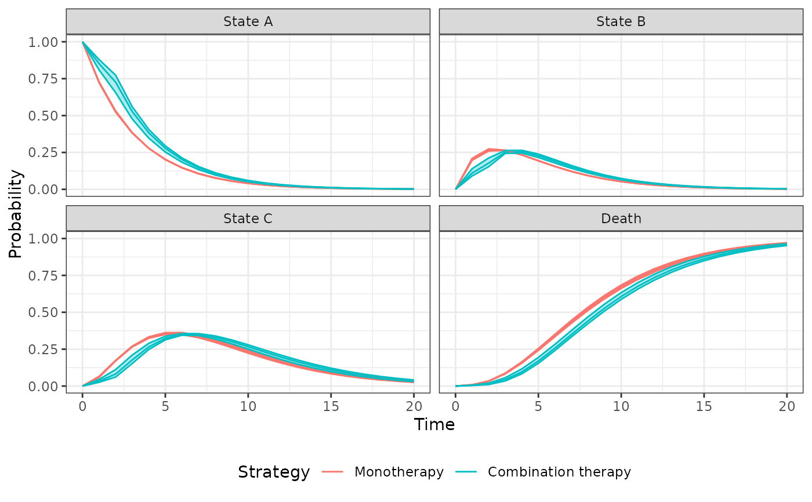

Simulate outcomes from a cohort discrete time state transition model.
An R6::R6Class object.
Incerti and Jansen (2021). See Section 2.1 for a description of a cohort DTSTM and details on simulating costs and QALYs from state probabilities. An example in oncology is provided in Section 4.3.
CohortDtstm objects can be created from model objects as
documented in create_CohortDtstm(). The CohortDtstmTrans documentation
describes the class for the transition model and the StateVals documentation
describes the class for the cost and utility models. A CohortDtstmTrans
object is typically created using create_CohortDtstmTrans().
There are currently three relevant vignettes. vignette("markov-cohort")
details a relatively simple Markov model and
vignette("markov-inhomogeneous-cohort") describes a more complex time
inhomogeneous model in which transition probabilities vary in every model
cycle. The vignette("mlogit") shows how a transition model can be parameterized
using a multinomial logistic regression model when transition data is collected
at evenly spaced intervals.
trans_modelThe model for health state transitions. Must be an object
of class CohortDtstmTrans.
utility_modelThe model for health state utility. Must be an object of
class StateVals.
cost_modelsThe models used to predict costs by health state.
Must be a list of objects of class StateVals, where each element of the
list represents a different cost category.
stateprobs_An object of class stateprobs simulated using $sim_stateprobs().
qalys_An object of class qalys simulated using $sim_qalys().
costs_An object of class costs simulated using $sim_costs().
new()Create a new CohortDtstm object.
CohortDtstm$new(trans_model = NULL, utility_model = NULL, cost_models = NULL)sim_stateprobs()Simulate health state probabilities using CohortDtstmTrans$sim_stateprobs().
An instance of self with simulated output of class stateprobs
stored in stateprobs_.
sim_qalys()Simulate quality-adjusted life-years (QALYs) as a function of stateprobs_ and
utility_model. See sim_qalys() for details.
CohortDtstm$sim_qalys(
dr = 0.03,
integrate_method = c("trapz", "riemann_left", "riemann_right"),
lys = TRUE
)drDiscount rate.
integrate_methodMethod used to integrate state values when computing
costs or QALYs. Options are trapz for the trapezoid rule,
riemann_left for a left Riemann sum, and
riemann_right for a right Riemann sum.
lysIf TRUE, then life-years are simulated in addition to QALYs.
An instance of self with simulated output of class qalys stored
in qalys_.
sim_costs()Simulate costs as a function of stateprobs_ and cost_models.
See sim_costs() for details.
CohortDtstm$sim_costs(
dr = 0.03,
integrate_method = c("trapz", "riemann_left", "riemann_right")
)drDiscount rate.
integrate_methodMethod used to integrate state values when computing
costs or QALYs. Options are trapz for the trapezoid rule,
riemann_left for a left Riemann sum, and
riemann_right for a right Riemann sum.
An instance of self with simulated output of class costs stored
in costs_.
summarize()Summarize costs and QALYs so that cost-effectiveness analysis can be performed.
See summarize_ce().
library("data.table")
library("ggplot2")
theme_set(theme_bw())
set.seed(102)
# NOTE: This example replicates the "Simple Markov cohort model"
# vignette using a different approach. Here, we explicitly construct
# the transition probabilities "by hand". In the vignette, the transition
# probabilities are defined using expressions (i.e., by using
# `define_model()`). The `define_model()` approach does (more or less) what
# is done here under the hood.
# (0) Model setup
hesim_dat <- hesim_data(
strategies = data.table(
strategy_id = 1:2,
strategy_name = c("Monotherapy", "Combination therapy")
),
patients <- data.table(patient_id = 1),
states = data.table(
state_id = 1:3,
state_name = c("State A", "State B", "State C")
)
)
n_states <- nrow(hesim_dat$states) + 1
labs <- get_labels(hesim_dat)
# (1) Parameters
n_samples <- 10 # Number of samples for PSA
## Transition matrix
### Input data (one transition matrix for each parameter sample,
### treatment strategy, patient, and time interval)
p_id <- tpmatrix_id(expand(hesim_dat, times = c(0, 2)), n_samples)
N <- nrow(p_id)
### Transition matrices (one for each row in p_id)
p <- array(NA, dim = c(n_states, n_states, nrow(p_id)))
#### Baseline risk
trans_mono <- rbind(
c(1251, 350, 116, 17),
c(0, 731, 512, 15),
c(0, 0, 1312, 437),
c(0, 0, 0, 469)
)
mono_ind <- which(p_id$strategy_id == 1 | p_id$time_id == 2)
p[,, mono_ind] <- rdirichlet_mat(n = 2, trans_mono)
#### Apply relative risks
combo_ind <- setdiff(1:nrow(p_id), mono_ind)
lrr_se <- (log(.710) - log(.365))/(2 * qnorm(.975))
rr <- rlnorm(n_samples, meanlog = log(.509), sdlog = lrr_se)
rr_indices <- list( # Indices of transition matrix to apply RR to
c(1, 2), c(1, 3), c(1, 4),
c(2, 3), c(2, 4),
c(3, 4)
)
rr_mat <- matrix(rr, nrow = n_samples, ncol = length(rr_indices))
p[,, combo_ind] <- apply_rr(p[, , mono_ind],
rr = rr_mat,
index = rr_indices)
tp <- tparams_transprobs(p, p_id)
## Utility
utility_tbl <- stateval_tbl(
data.table(
state_id = 1:3,
est = c(1, 1, 1)
),
dist = "fixed"
)
## Costs
drugcost_tbl <- stateval_tbl(
data.table(
strategy_id = c(1, 1, 2, 2),
time_start = c(0, 2, 0, 2),
est = c(2278, 2278, 2278 + 2086.50, 2278)
),
dist = "fixed"
)
dmedcost_tbl <- stateval_tbl(
data.table(
state_id = 1:3,
mean = c(A = 1701, B = 1774, C = 6948),
se = c(A = 1701, B = 1774, C = 6948)
),
dist = "gamma"
)
cmedcost_tbl <- stateval_tbl(
data.table(
state_id = 1:3,
mean = c(A = 1055, B = 1278, C = 2059),
se = c(A = 1055, B = 1278, C = 2059)
),
dist = "gamma"
)
# (2) Simulation
## Constructing the economic model
### Transition probabilities
transmod <- CohortDtstmTrans$new(params = tp)
### Utility
utilitymod <- create_StateVals(utility_tbl,
hesim_data = hesim_dat,
n = n_samples)
### Costs
drugcostmod <- create_StateVals(drugcost_tbl,
hesim_data = hesim_dat,
n = n_samples)
dmedcostmod <- create_StateVals(dmedcost_tbl,
hesim_data = hesim_dat,
n = n_samples)
cmedcostmod <- create_StateVals(cmedcost_tbl,
hesim_data = hesim_dat,
n = n_samples)
costmods <- list(drug = drugcostmod,
direct_medical = dmedcostmod,
community_medical = cmedcostmod)
### Economic model
econmod <- CohortDtstm$new(trans_model = transmod,
utility_model = utilitymod,
cost_models = costmods)
## Simulating outcomes
econmod$sim_stateprobs(n_cycles = 20)
autoplot(econmod$stateprobs_, ci = TRUE, ci_style = "ribbon",
labels = labs)

econmod$sim_qalys(dr = 0, integrate_method = "riemann_right")
econmod$sim_costs(dr = 0.06, integrate_method = "riemann_right")
# (3) Decision analysis
ce_sim <- econmod$summarize()
wtp <- seq(0, 25000, 500)
cea_pw_out <- cea_pw(ce_sim, comparator = 1, dr_qalys = 0, dr_costs = .06,
k = wtp)
format(icer(cea_pw_out))
#> Outcome 2
#> <fctr> <char>
#> 1: Incremental QALYs 0.88 (0.42, 1.26)
#> 2: Incremental costs 5,252 (401, 8,617)
#> 3: Incremental NMB 38,957 (17,712, 56,120)
#> 4: ICER 5,940